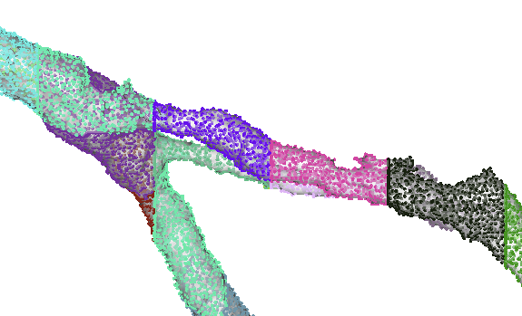

Examples
Here are a few examples of using dataset-specific clients for work.
Install and import
Importing client from any of the dataset-specific modules in cortical_tools.datasets will return a fully initialized dataset client object configured for that dataset.
The current datasets are minnie_public, minnie_prod, v1dd, and v1dd_public.
If you have not yet configured your environment to access these datasets, you will need to do so before using the client.
Please see your dataset documentation to do this.
from cortical_tools.datasets.minnie_public import client
client
This client is not a CAVEclient, but rather a dataset-specific client that provides access to the dataset's resources and functionality.
The typical CAVEclient is available under client.cave, and has all the usual CAVE functionality.
See the Dataset Clients section for details on all available dataset clients.
Neuroglancer links
If you want to jump directly into the data, you can use the neuroglancer_url() method to get a URL that opens the Neuroglancer viewer at the specified location.
This url is also integrated into the object representation in a jupyter notebook, where if you just return client, you can click on it to open a neuroglancer viewer.
There are a few handy features inherited from nglui, including the ability to copy the URL to your clipboard with client.neuroglancer_url(clipboard=True).
Queries
The tables and views properties give access to the dataset's tables and views via an autocomplete-compatible feature. This is a passthrough to the caveclient.materialize.tables and caveclient.materialize.views functionality.
client.tables
alone will list the tables.
To query one of these tables, you can get access via client.tables.<table_name>. For example:
df = client.tables.proofreading_status_and_strategy().query()
would return the proofreading status table. You can query using the parameters in the table name function and set response parameters in the query function. For example,
proof_df = client.tables.proofreading_status_and_strategy(
status_axon=True
).query(desired_resolution=[1,1,1], split_positions=True)
will return only those rows with status_axon=True and with the desired resolution of [1,1,1] and split positions enabled.
Map cell IDs to root IDs and back again
Root ids and cell ids have complementary uses. Root ids represent the exact reconstruction state of an object and can be used to load a cell in neuroglancer, however they change with every edit. In contrast, cell ids are stable and do not change over time, but they point to different versions of the same object at different times and cannot be plugged into neuroglancer by default. Because of this, it's useful to go back and forth between root ids and cell ids for different purposes. There is a convenience function that helps you do this.
root_ids = [864691134885645050, 864691135440543560, 864691135157210468]
cell_id_df = client.root_id_to_cell_id(root_ids)
This will return a dataframe whose indices are the root ids queried and with a column cell_id that is the cell id.
You could then use this to merge with other dataframes on the index.
If a cell has no cell id, perhaps because it has no entry (or multiple entries) in the tables that define cell ids, it will have a value of -1.
Note that one does not need to specify a timestamp at which a root id was valid, this will be looked up along the way.
You can do the reverse, with cell id to root id lookup via the cell_id_to_root_id() method:
cell_ids = [264898, 262893, 260746, 256505, 304873, 309263, 292878, 365890, 230644, 518853]
root_id_df = client.cell_id_to_root_id(cell_ids)
with similar properties, namely a dataframe whose index is cell ids and whose column is root_id, which is a root id.
Note
Note that both of these functions will look both at the main cell id table and any backup table used. Why do backup tables exist? Sometimes the primary cell id table is based on nucleus locations and in a small number of cases these nucleus centers don't fall on the segmentation. To get around this, we sometimes have alternative lookup tables that complement the main one. These functions use both the main and backup tables to provide the most accurate mapping.
Spatial transformations
Different cortical datasets are oriented in different ways, but typically we want to consider a coordinate system where the pial surface is at y=0 and depth goes orthogonally down toward white matter.
Moreover, there can be a natural curvature to cells at different depths that we want to account for.
The package standard_transform provides spatial transforms tailored to these database that will help approximate these issues.
The appropriate set of transform functions are mapped to client.space, for example standard_transform.minnie65_ds is mapped to client.space in the above examples.
Let's use this to find the soma depth for the proofread points.
Because we used a desired resolution of [1,1,1], spatial values came back in nanometers.
soma_depth = client.space.transform_nm.apply_dataframe('pt_position', proof_df, projection='y')
Getting meshes
Meshes can be retrieved through cloudvolume, but there's no need to do that directly here.
mesh = client.mesh.get_mesh(864691134885645050)
will return a cloudvolume.Mesh object defined by properties vertices and faces. A similar get_meshes() function will return a dictionary of meshes keyed by their root ids.
See the MeshClient documentation for all available mesh operations.
Get a skeleton
The new skeleton service helps return skeletons, and pcg_skel has additional functions to add synapses and vertex ids that help you map additional properties.
This functionality is baked into cortical_tools like so:
root_id = int(root_ids.iloc[0])
nrn = client.get_skeleton(root_id, synapses=True)
This returns a Meshparty "meshwork" object with skel.skeleton as a skeleton, as well as synapse information in nrn.anno.pre_syn and nrn.anno.post_syn respectively.
In addition, you can apply the same spatial transformations you do to points to the skeletons and annotations returned.
The parameter transform can take one of two values: rigid or streamline. If you choose rigid, the skeleton and annotation points are rotated and translated so that the pial surface is at y=0 and "down" is toward white matter. If you choose streamline, the points are deformed along the principal curvature of neurons that project across layers. This will have the effect of making a "direct" translaminar projection such as the axon of a layer 2/3 cell or the apical dendrite of a layer 6 cell will appear more vertical.
See the get_skeleton() method documentation for all available parameters.
Helpers to download bulk exports
To help with bulk analysis and data archiving, many tables are exported as files to a cloud storage bucket. If you have access to one of these buckets (ask your system administrator!), the exports module helps find and retrieve these files.
# If you have a static export bucket
client.set_export_cloudpath("gs://my-bucket/exports/") # Get this from someone in the know
Now, to see what is available, you can use the available_data_df() function to get a DataFrame of all available export files, what versions are present, and how big the files are.
Once you know the table name and the desired version, you can use the get_table() function to retrieve the data as a DataFrame.
df = client.exports.get_table('connections_with_nuclei', 1484)
If you want to know what versions are available for a given table, you can use the available_versions() function.
versions = client.exports.available_versions('connections_with_nuclei')
See the File Export Classes documentation for more details.
Helpers to assign level 2 ids to a mesh

Mesh vertices labeled by different Layer 2 Ids.
It can be convenient to mask out parts of a mesh that you don't want to visualize or analyze, but most ways of assigning labels relate to skeletons.
Skeleton vertices that are generated with pcg_skel have a unique "level 2 id" associated with each vertex, and nominally there is a mapping between these level 2 ids and mesh vertices.
In practice, however, this mapping is lost in the creation of meshes.
In order to recover this mapping, you can use the compute_vertex_to_l2_mapping() function in the MeshClient class. This function takes the root ID of the mesh and returns an array of layer 2 IDs for each vertex.
l2mapping = client.mesh.compute_vertex_to_l2_mapping(root_id)
This will take anywhere from a minute to several minutes depending on the size of the mesh, including both mesh downloading and processing. If you want to cut down some of the time and you have a mesh already downloaded, you can pass the vertex and face arrays directly to the function:
l2mapping = client.mesh.compute_vertex_to_l2_mapping(
root_id,
vertices=mesh.vertices,
faces=mesh.faces
)
The resulting l2mapping will have the same length as mesh.vertices and a corresponding layer 2 ID for each vertex.
Vertices that were unable to be assigned are given a value of 0.
Finished mappings are preserved in the MeshClient under client.mesh.mesh_l2_mappings, which is a dictionary from root ids to id maps.
If you want more complete information about the process, including mesh vertices and faces, you can also set the parameter return_assigner=True, which will return both a mapping array and the VertexAssigner class, which contains among other things the vertices and faces of the mesh (va.vertices and va.faces respectively).